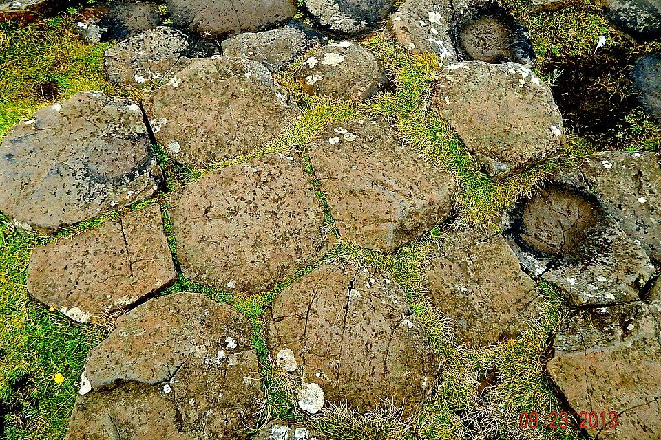

Planet Earth · 5 articles
Earth curiosities
Simulators, planet records, the most extreme places, astonishing phenomena and myths about the Earth.
Our planet holds records that sound made up, places where you could not survive more than a few hours and phenomena that for centuries were taken for magic. Here we gather them, together with simulators to travel to the centre of the Earth or squeeze its whole history into a year, and the myths worth putting to rest.
 Earth simulatorsTravel to the centre of the Earth, compare the energy of great earthquakes and find out on what day the dinosaurs would appear if the planet's history lasted twelve months.
Earth simulatorsTravel to the centre of the Earth, compare the energy of great earthquakes and find out on what day the dinosaurs would appear if the planet's history lasted twelve months. Planet recordsThe highest and deepest points, the longest river, the deepest lake, the tallest waterfall, the wettest place and other Earth records.
Planet recordsThe highest and deepest points, the longest river, the deepest lake, the tallest waterfall, the wettest place and other Earth records.- Extreme placesDallol, Lake Natron, the Cave of the Crystals, the Door to Hell and other places on Earth that look like another planet.
 Amazing phenomenaRainbows, unique snowflakes, geysers, fire tornadoes, raining fish and the smell of rain: the science behind everyday wonders.
Amazing phenomenaRainbows, unique snowflakes, geysers, fire tornadoes, raining fish and the smell of rain: the science behind everyday wonders.
Myths about the EarthThe Great Wall seen from space, lightning never striking twice, water swirling the other way in the other hemisphere and other myths about the Earth.